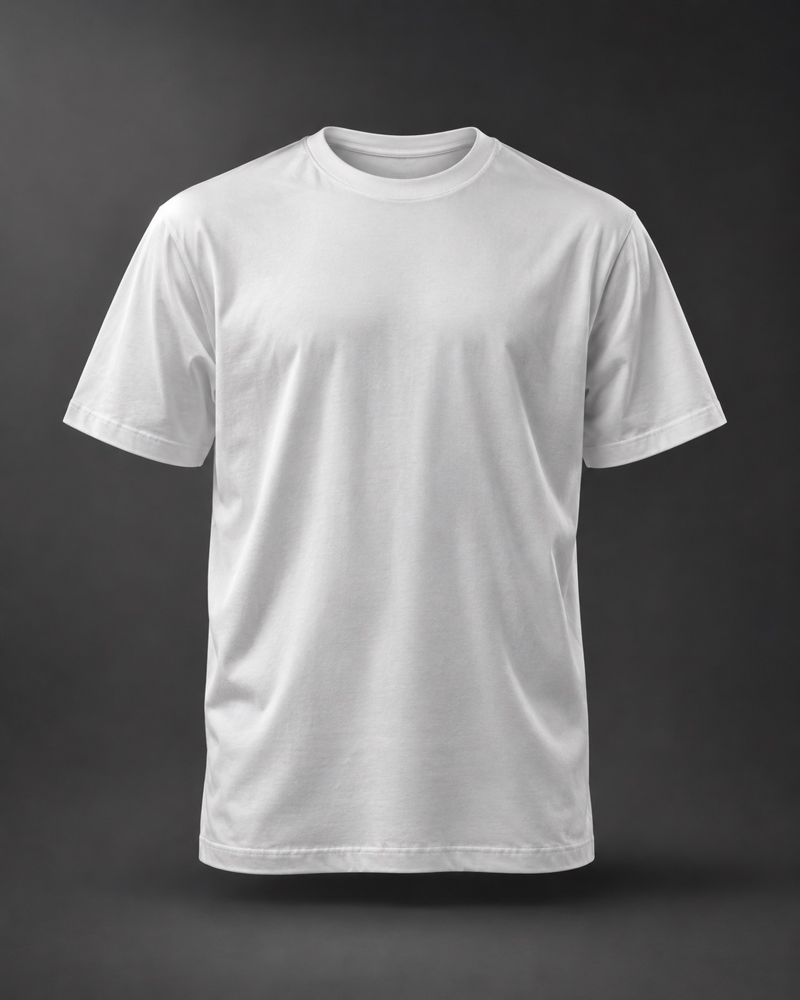
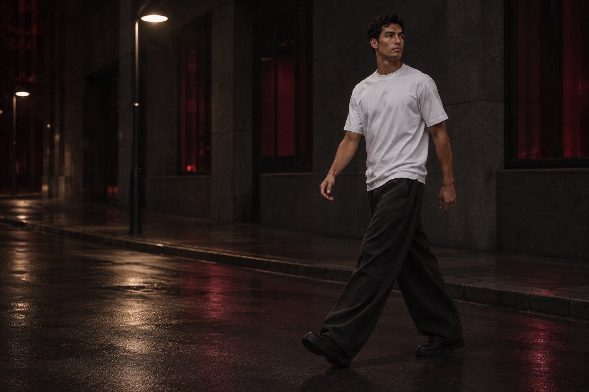

Night
CSS token
Page background
Identity / Design A / in progress
The same color tokens, typography, controls and concept imagery as the storefront. Design A: clarity after dark. The approved O/H logo is shared with the storefront.
Record your agreed reasoning in SPEC.md, then reflect it here.
18–30
College students and young adults interested in understated streetwear and individual expression. Persona situations remain hypotheses.
The Rebel
Independence and self-direction, expressed through the brand’s character.
Modernist / A
Selected for a cleaner structure, clarity and ease of shopping. Large type; orderly composition.
Approved Option B: the O/H symbol paired with the OFFHOUR name. The symbol-to-name spacing has been increased slightly for balance.
Navigation / 180px
Small lockup / 110px · symbol / 24px
One-color artwork: off-white on dark and explicit solid black on off-white. Use the full lockup in navigation; the standalone symbol is available for small square spaces. Preserve its proportions and leave clear space around it. No font dependency or grayscale filter.
Selected because the separate symbol could suit tags, packaging and social media, while the name stays recognizable and its geometry fits OFFHOUR’s clean modern identity. These are intended uses, not implemented packaging or verified audience recognition.
Design A roles. Swatches and values use the same shared CSS tokens as the storefront.
CSS token
Page background
CSS token
Main text and selected sizes
CSS token
Primary action and restrained emphasis
CSS token
Image and example surfaces
CSS token
Supporting text
Give each color a role. Check contrast for the actual text, backgrounds, focus indicators, and button states you use.
Arial and Helvetica keep a consistent sans-serif hierarchy without remote font downloads.
Off the clock.
On your terms.
Use clear language to help someone understand the product and choose their next step. Keep the words grounded in what you actually know.
One product. Deliberate choices.
Shared spacing tokens create a repeatable rhythm. Adapt the scale to your direction.
CSS token
CSS token
CSS token
CSS token
CSS token
CSS token
Use smaller gaps for related information and larger gaps between sections. Check the rhythm at phone and desktop widths.
Bold. Direct. Effortless. The same voice as the storefront.
“Choose a size.”
Short, direct, and specific about the next action.
“Off the clock. On your terms.” Use concise, self-directed language. Product descriptions remain factual; fit and fabric claims are not supplied. The free styling notes offer useful ideas, while the story and editorial styling communicate shared tastes and independent expression.
The same generated front, back and angled mockups and gallery controls as the storefront. No image verifies actual fabric, fit or construction.

Front / AI-generated concept mockup.
Shared editorial asset. Every usage is labeled as a generated concept mockup.

Approved story: OFFHOUR takes its cue from late nights and independent expression. A plain white tee becomes a starting point for a style—and a rhythm—of your own.
Motion: a short section-entry reveal on scroll. Content stays visible without JavaScript; reduced-motion preferences disable the reveal.
The same styling components and copy as the storefront. No signup or purchase required.
White / Charcoal / Black
White tee + charcoal trousers + dark shoes.
Let the white tee be the contrast. Start with dark trousers and shoes you already own.
White / Washed gray / Black
White tee + faded denim + simple sneakers.
Keep the combination familiar, then make it yours with the denim and sneakers already in your wardrobe.
White / Burgundy / Charcoal
White tee + open overshirt + dark trousers.
Leave an overshirt open so the white tee stays visible. Choose a color that feels like you.
Reciprocity: freely available styling notes give outfit inspiration without a purchase or signup. No claim of obligation or a measured conversion effect.
Liking: the approved independent-expression story and editorial styling communicate similar tastes and values, helping visitors judge whether OFFHOUR fits their identity. No invented testimonials, customer community or founder biography.
Read the free styling notes on the storefront ↗